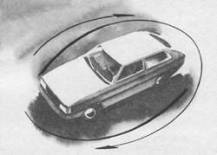

Аварийное торможение вращением
Одна из самых острых критических ситуаций связана с отказом тормозной системы. Эта ситуация встречается чрезвычайно редко, так как современные автомобили оборудованы двухконтурной тормозной системой, при которой почти всегда исключается полный отказ. Но когда это все же случается, тяжелые последствия неминуемы. Эти ситуации унесли много человеческих жизней на автобусах и грузовых автомобилях, оборудованных пневматическими тормозными устройствами, из-за отсутствия давления воздуха в тормозной системе. Легковые автомобили “преклонного возраста” часто попадают в ситуации такого типа при разрыве тормозного шланга, дефекте колесного тормозного цилиндра и во многих других случаях, в том числе и таких, когда водитель не проверил уровень тормозной жидкости в бачке главного тормозного цилиндра.
Хотя многие специалисты считают, что отказу тормозной системы предшествует ряд признаков, по которым можно спрогнозировать наличие дефектов (увод автомобиля при торможении, возникновение заноса, ослабление тормозного эффекта), чаще всего это явление вызывает стресс своей неожиданностью и остротой критической ситуации. Опытный водитель тотчас многократно повторяет тормозной импульс, пытаясь повысить давление в тормозной системе, неопытный – продолжает давить на тормозную педаль, доходя до шокового состояния, угнетающего двигательную деятельность.
В некоторых случаях удается снизить скорость автомобиля даже малоэффективными приемами – торможением двигателем с включением понижающих передач, стояночным тормозом. Но чаще всего для избежания аварийной ситуации необходим нестандартный подход. Вариантами такого подхода могут быть торможение боковым соскальзыванием (см. прием 45) и торможение вращением автомобиля.
Торможение вращением чрезвычайно эффективно из-за короткого остановочного пути. Механизм его связан с переводом поступательного движения во вращательное и снижением скорости за счет интенсивного бокового скольжения задних колес. Тормозной путь задних колес скручивается в спираль, и этим объясняется высокая тормозная динамика.
Для того чтобы тормозить вращением, нужно выполнить последовательно три операции.
1. Создать начальный импульс вращения, который можно получить:
– включением и выключением стояночного тормоза на дуге поворота (повернуть колеса, начать поворот, заблокировать колеса…);
– резким включением понижающей подачи при закрытом дросселе (повернуть колеса, резко включить понижающую передачу…);
– контрсмещением (повернуть рулевое колесо в сторону, противоположную вращению, начать поворот в другую сторону, резко “открыть газ”…);
– контрзаносом (вызвать любым из ранее названных приемов небольшой занос в сторону, противоположную вращению, перевести автомобиль в критический занос в направлении вращения…)
2. Перейти в интенсивное вращение вокруг передних колес скольжением задних за счет их пробуксовки, вызываемой дросселированием.
Для этого надо повернуть колеса на наибольший угол, резко довести частоту вращения коленчатого двигателя до максимальной, создав этим интенсивное буксование задних колес. Удерживать этот режим весь период вращения автомобиля на 180°.
3. Перевести автомобиль во вращение вокруг задних колес скольжением передних при выключенном сцеплении (см. прием 39).
Если не удалось полностью прекратить поступательное движение, то можно продолжить вращение, применив для этого операции 2 и 3 одно – или многократно до полной остановки автомобиля.

Если тормозная педаль дошла до пола, а торможения нет – не приходите в отчаяние. Попробуйте одним-двумя импульсами “оживить” тормозную систему и готовьтесь к худшему.
Попытайтесь снизить скорость всеми возможными способами: ручным тормозом, ударным включением понижающих передач, боковым скольжением.
Когда исчерпаны все возможности для снижения скорости, используйте вращение, если этот прием не создаст опасности для окружающих. Выполните разворот передним ходом, а затем “полицейский разворот” задним ходом. Продолжайте вращение до полной остановки автомобиля.
Если вы никогда не выполняли этот прием торможения, то и не пытайтесь его применять, так как последствия могут быть плачевными.
Хотя данный прием очень эффективен в аварийных ситуациях, связанных с отказом тормозной системы, и в критических – при потере устойчивости автомобиля (см. приемы 37 и 38), он достаточно сложен и требует высокого уровня мастерства из-за большого числа действий по управлению, связанных общей структурой.
Если координация действий нарушена, то автомобиль вместо вращения переходит в неуправляемое боковое скольжение, которое может окончиться опрокидыванием (см. прием 43). Боковое скольжение может возникнуть и при рефлекторном торможении. Опасность заключается в возврате от вращательного движения к поступательному с выносом на полосу встречного движения или обочину дороги.
Часто новички выполняют торможение вращением непроизвольно, практически не понимая, как это происходит. А происходит это в большинстве случаев благодаря созданию предварительного импульса вращения резким торможением, опозданием реакции на занос и выключением сцепления во второй фазе вращения. Все эти действия позволяют самому автомобилю без помех выполнить разворот на 360°. При этом гасится скорость движения.